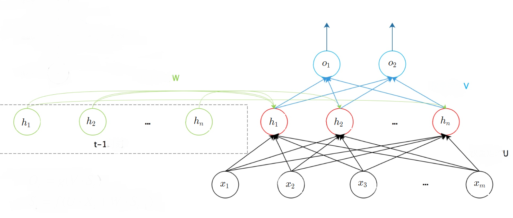
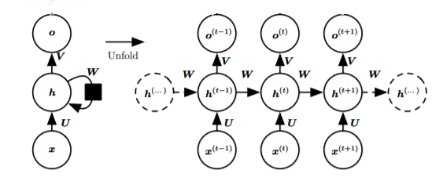
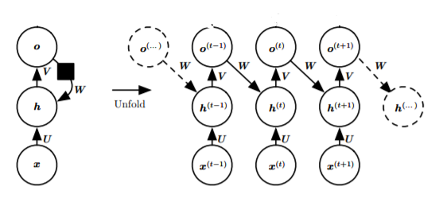
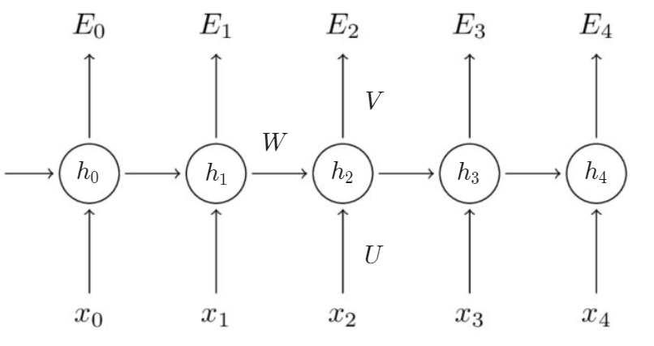
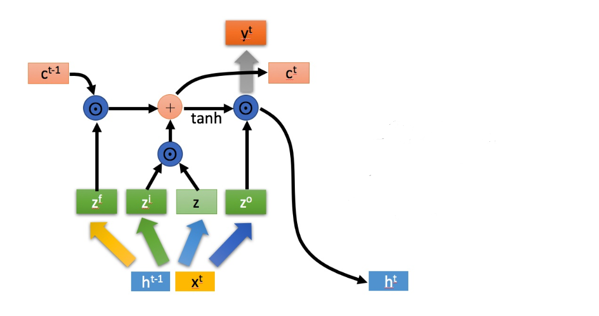

3. rnn
$\global\def\p{\partial} $
$\global\def\f{\frac} $
$\small\text{1. RNN}$
以 "I went to Nepal in 2009" 和 "In 2009, I went to Nepal" 作为输入，我们需要一个模型，无论 2009 出现在哪个位置，都能学到年份信息。
(1). standard RNN
用系统的状态方程描述 RNN: $\bm{h}^{(t)} = f(\bm{h}^{(t-1)}, \bm{x}^{(t)};\ \theta)$，其网络结构的示例如下:

按照时间步展开，可表示为:

上述例子每个时间步的方程组:
$\displaystyle
\begin{cases}
\bm{h}^{(t)} = \mathrm{tanh}(\bm{b} + \bm{W}\bm{h}^{(t-1)} + \bm{U}\bm{x}^{(t)}) \\
\bm{o}^{(t)} = \bm{c} + \bm{V} \bm{h}^{(t)} \\
\hat{\bm{y}}^{(t)} = \mathrm{softmax}(\bm{o}^{(t)})
\end{cases}
$
综上，RNN 的基本特性如下:
- 隐层每一轮的输出都需要上一轮的隐层的输出，即: $\bm{h}^{(t)} = g^{(t)}(\bm{x}^{(t)},\bm{x}^{(t-1)},...,\bm{x}^{(1)})$
RNN 记忆了 $t$ 步以前的所有输入知识，实现第 $t$ 步的预测
- 通过共享参数 $\bm{U, V, W}$ 学习整个序列的特征或规律，其好处有:
- 泛化能力强，序列长度不局限于训练数据 $\bm{x}$ 的长度
- 减小复杂度
(2). simple RNN

simple RNN vs. standard RNN:
- 这种结构也可以描述 "每个 timestep 的决策与前面的决策有关"，但类比于人脑处理序列信息的过程 (例如拼积木)，预测当前输出时，依据的不仅仅是上一个输出，通常是一个模糊的、和过去有关的框架。
- 数学上，simple RNN 只能表示更小的函数集合
- simple RNN 更容易训练，可以并行
(3). 反向传播
RNN 的反向传播算法为 BPTT (backpopagation through time) 算法，本质上还是 BP 形式的梯度下降。

以上图为例，其前向计算过程为:
$\displaystyle
\bm{h_t} = \mathrm{tanh}(\bm{U}\bm{x_t}+\bm{W}\bm{s_{t-1}}) \\
\hat{\bm{y}}_t = \mathrm{softmax}(\bm{Vh_t}) \\
E(\bm{y}, \bm{\hat{y}}) = \sum_t E_t(\bm{y}_t, \hat{\bm{y}}_t) = - \sum_t \bm{y_t} \log \hat{\bm{y}}_t
$
以 timestep 3 为例反向传播。
对 $\bm{V}$ 求导只涉及当前 timestep，因此比较简单
$\displaystyle
\f {\p E_3} {\p \bm{V}} = \f {\p E_3} {\p \hat{\bm{y}}_3} \f {\p \hat{\bm{y}}_3} {\p \bm{o}_3} \f {\p \bm{o}_3} {\p \bm{V}}
$
对 $\bm{W}$ 和 $\bm{U}$ 的求导过程类似
$\begin{aligned}\displaystyle
\f {\p \bm{h}_3} {\p \bm{W}} &= \f {\p \bm{h}_3} {\p \bm{W}} + \f {\p \bm{h}_3}{\p \bm{h}_2} \f {\p \bm{h}_2} {\p \bm{W}}
= \f {\p \bm{h}_3} {\p \bm{W}} + \f {\p \bm{h}_3}{\p \bm{h}_2} \left( \f {\p \bm{h}_2} {\p \bm{W}} + \f {\p \bm{h}_2} {\p \bm{h}_1} \f {\p \bm{h}_1} {\p \bm{W}} \right) = ... \\
&= \sum_{i=0}^3 \f {\p \bm{h}_i} {\p \bm{W}} \prod_{j=i+1}^3 \f {\p \bm{h}_j} {\p \bm{h}_{j-1}}
\end{aligned}
$
$\displaystyle
\f {\p E_3} {\p \bm{W}} = \f {\p E_3} {\p \hat{\bm{y}}_3} \f {\p \hat{\bm{y}}_3} {\p \bm{h}_3} \f {\p \bm{h}_3} {\p \bm{W}}
= \f {\p E_3} {\p \hat{\bm{y}}_3} \f {\p \hat{\bm{y}}_3} {\p \bm{h}_3} \left( \sum_{i=0}^3 \f {\p \bm{h}_i} {\p \bm{W}} \prod_{j=i+1}^3 \f {\p \bm{h}_j} {\p \bm{h}_{j-1}} \right)
$
可以观察到，在对 $\bm{W}$ 求导的过程中，误差 $E_n$ 沿着 timestep 向后传播，最后 $\bm{W}$ 的梯度为传播到每个 timestep 上误差的和。
其中 $\small \displaystyle \f {\p \bm{h} _ j} {\p \bm{h} _ {j-1}} = \bm{W}\cdot \mathrm{tanh}'$，当 RNN 层数很深时 (时间上)，距离 RNN 尾端较远的误差中的连乘项的值要么很大，要么很小，这就是 RNN 容易发生 (伪) 梯度消失或梯度爆炸的原因。
(4). 局限
RNN 的主要问题之一是长期依赖: 当前输入依赖的输入如果距离当前输入较远的时候，效果很差。
原因在于，$\bm{U}$ 和 $\bm{W}$ 是共享的，其梯度 $g = g_1 + g_2 + ...$，距离尾端越远的梯度就越容易发生梯度消失，因此，尽管理论上存在一个具有长期依赖功能的 RNN，但由于上述特性的存在，这样的 RNN 难以通过训练得到。
$\small\text{2. LSTM}$
LSTM (长短期记忆, long short term memory) 受神经元细胞具有记忆功能的启发，改进了 RNN。

LSTM 的状态由一个 pair $(c^{(t)}, h^{(t)})$ 组成，其中 $c^{(t)}$ 是长期记忆单元，$h^{(t)}$ 是短期记忆单元。
$\displaystyle
\begin{aligned}
&\bm{z}^f = \sigma(\bm{W}^f\ [\bm{x}^{(t)},\ \bm{h}^{(t-1)}]) \qquad &&\bm{z}^i = \sigma(\bm{W}^i\ [\bm{x}^{(t)},\ \bm{h}^{(t-1)}]) \\
&\bm{z} = \mathrm{tanh} (\bm{W}\ [\bm{x}^{(t)},\ \bm{h}^{(t-1)}]) \qquad &&\bm{z}^o = \sigma(\bm{W}^o\ [\bm{x}^{(t)},\ \bm{h}^{(t-1)}]) \\
&\text{forward:} \\
&\qquad \bm{c}^{(t)} = \bm{z}^{f} \odot \bm{c}^{(t-1)} + \bm{z}^{i} \bm{z} \\
&\qquad \bm{h}^{(t)} = \bm{z}^{o} \odot \mathrm{tanh} (\bm{c}^{(t)}) \\
&\qquad \bm{y}^{(t)} = \sigma(\bm{W'}\ \bm{h}^{(t)})
\end{aligned}
$
LSTM 的主线是 $c^{(t)}$，它代表长期记忆，设计思路为:
- 相邻 timestep 之间 $\bm{c}$ 的更新只有加性的线性变换，没有非线性变换，这使得 $\bm{c}$ 的变化缓慢，有利于信息的清晰可辨 (更好地捕获信息)
- 添加新信息时，类比于人记忆的过程，通过输入门 $\bm{z}^{i}$，只记关键的信息
- 记忆新信息的同时，通过遗忘门 $\bm{z}^f$ 遗忘一部分过去的信息
以上三点还有利于减缓梯度消失或梯度爆炸。
类比于人的记忆过程，预测当前 timestep 的输出时，依赖的并不是全部历史信息 $\bm{c}^{(t)}$，而是与当前输出有关的那一部分，于是通过输出门 $\bm{z}^o$ 控制这部分信息的提取，得到短期记忆 $\bm{h}^{(t)}$。